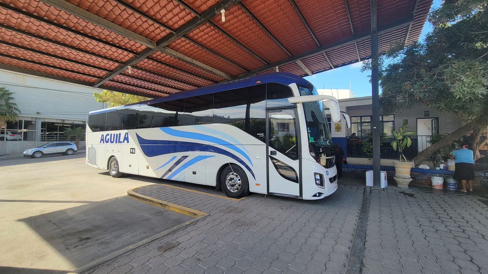
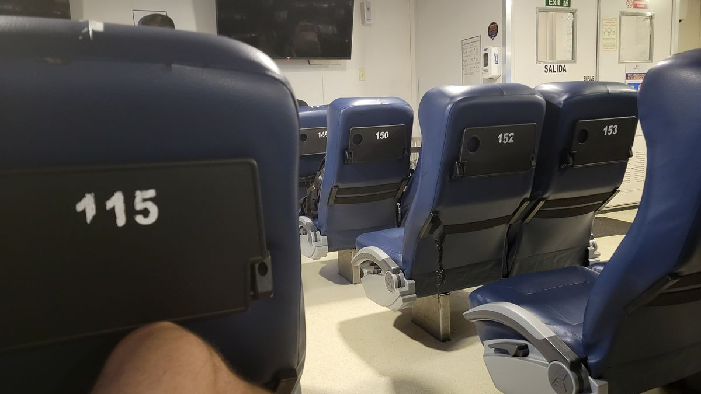
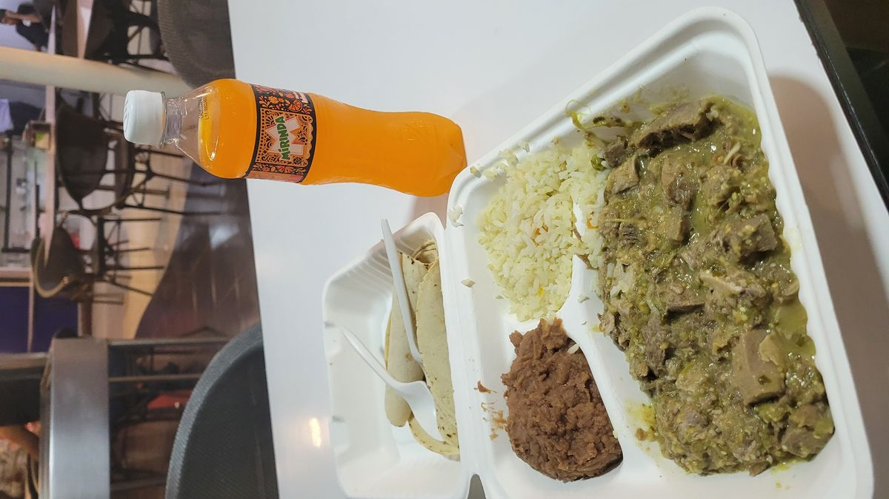

Baja Ferries
The time had finally come to leave the Baja peninsula and check the first portion of this adventure off the to-do list. I’ll make a more comprehensive post about my thoughts on Baja as a whole in a few days, but for now we will say this has been an experience for the books and I will always lookback fondly on my time in Baja California.
The easiest way to get to mainland Mexico from Los Cabos is to fly. Mexico has 2 big Low-Cost Airlines and one full service airline that offer a variety of flights around the country as reasonable rates and times. This is not that kind of adventure though. I can fly an Airbus A320 to anytime I want, I’ve done it dozens of times. What I can’t do anytime I want is take a Mexican truck ferry for 12 hours, overnight to Mazatlán. It did save some money too, the fare for the ferry was ~$98USD, this included dinner and breakfast. One of the first things you learn about budget traveling is the benefits of booking overnight transportation. You always have to pay for lodging (well, unless you’re one of those kinds of NOMADS), and you always have to pay for transportation (again, most people do). If you can kill 2 birds with one stone, it always a plus. The flight options were to spend about $40 more to fly to Guadalajara and backtrack to the coast, spending more money. The choice was obvious.
The day started by walking to the San Jose del Cabo bus station with a roommate from the hostel. A girl from Belgium who was traveling on the same bus as me back to La Paz, although she was catching a flight back home to Europe after being in Mexico for 4 months studying. I purchased my ticket on the reliable Baja Eagle (Aguila Bus lines). My last ride on the Eag as they don’t operate outside of Baja California and waited patiently for the bus to begin boarding.

We had arrived about 45 mins early but as time drew closer to departure there was no driver to be found. About 10 mins prior to our scheduled departure an annoyed station manager came out of her office and started pacing around the bus, opening the doors and baggage compartments.
A lot of the bigger bus stations in México have small hotel rooms attached to the station for what I presume are for drivers to rest in-between runs. The manager walkt to the other side of the bus and just screams
“JOSE!!!!, VINCENTE JOSE!!!”
A few moments pass still no sign of this no-way Jose.
“JOSE!!!!, VINCENTE JOSE!!!” she repeats.
The Janitor meekly asks if she wants him to go knock and she shakes her head.
A few moments later our driver appears from one of the rooms hastily buttoning his shirt. The manager taps an imaginary watch on her wrist, and he says something in Spanish.
After getting on the bus I see him pull a paper from the dashboard and show it to the manager. He shrugs his shoulders in what appears to be defeat and we shortly begin tagging our luggage and handing over our tickets.
The route is just the reverse of how I arrived to San Jose. Passing again thought Cabo San Lucas and Todos Santos, dropping me off at the La Paz Malecon station about 20 mins early. The ferry wasn’t schedules to leave until 7pm and it was just before 3pm. I got lunch and made a pit stop at an Oxxo for snacks as I wasn’t so sure about the food situation on the ship.
The port for La Paz is actually about 30 mins away in an area called Pichilinque. A quick DiDi (a foreign version of Uber) got me to the port with plenty of time to spare. Arriving to the terminal and boarding areas are a little confusing as their isn’t really much signage and no one ever gives you instructions. You just have to wing it and ask for help when needed. I eventually found the Baja Ferries office and a small line at a window. So if you’re reading this and don’t know me personally, I was in the Marine Corps for 5 years when I was younger which included a lengthy deployment on the USS Kearsarge. One of the many things Marines to well in regards to large ships in stand in lines. You stand in a line for the shower. You stand in line to eat. You wait in line to use the gym. To get a haricut. Sometimes I would just stand in a line because there was other Marines in a line so I would join them. So when it comes to standing in a line in regards to a Nautical vessel I was practically an expert. I reverted back to my old training (head and eyes straight to the front, don’t lock the knees) and the time passed with ease and soon it was my turn at the window.
I handed over my paperwork and the clerk looked it over, looked at my ID and printed my boarding pass. And pointed in the general direction of behind me. I looked behind me and was a little confused at this point as there was no line. The was a cue for a line but just a lonesome janitor mopping the floor and some other passengers sitting on some chairs nearby. My training had not prepared me for this. So I figured I would do the next best thing and wait for the line to form and took a seat.
Out of curiosity I asked the couple sitting across from me, “Que hora abordamos?”
I must have butchered the language because the man answered back in English, “If you have your boarding pass you need to talk to that guy” and pointed to the janitor.
I figured this must be some sort of joke, but as good tourist I did as I am told.
I walked up to the janitor who put down his mop and took my paper work. He read my name from papers “James Joseph…ok you can go” and pointed to the open gate further down the hall. Bewildered that this was actually what I was supposed to do I gathered my things and began the walk.
Standing next to a desk with two ferry company representatives is a Mexican Marine, (they provide security for the ports and not out of place here) so I figure if anyone is going to start a line it’s this guy. And sure, enough after they check my documents again, he motions for me to put my bag on a cart and to start a line at the end of a ramp. I don’t know what this line is for but at least it’s a line and that means were making progress.
I stand there for a few minutes and other people start lining up behind me and eventually a Sprinter van pulls up to take us to the ship.
The amenities on the ship are sparse and the attendant directs me to my seat for the evening and I settle in for the long ride. I quickly survey the passenger areas of the ship. We have our seating area, a galley and a bar. They did have cabins to purchase but they were significantly more expensive.


The passenger area has about 150 seats and 4 TV’s. My experience on the busses in Mexico tells me those TVs will be used to play bootleg movies until way past my bedtime, and I was correct with the sets not finishing the live action Aladdin with Will Smith until well after 1am (dubbed in Spanish of course).
Shortly after the ship got underway, I made my way back to the galley for food and was greeted by this appetiizing meal. And since this is an adventure and we do adventurous things, I ate it of course And I’m glad I did because it wasn’t bad at all. Just some beef, beans, rice and tortillas. Classic Mexican staples. Even when Mexican food looks bad, it’s still pretty good.

I’ve never been one to sleep much in any sort of chair on transportation like airplanes or busses so I knew it was going to be a rough one. Thankfully since most of my accommodations are shared Hostel rooms, I came prepared with blackout eye shades and earplugs. I was able to squeak out a few hours of restless sleep and once I saw on my watch it was 6am figured that was a good enough time to call it quits and wait in my chair until we were scheduled to arrive in Mazatlán 3 hours later. I skipped the breakfast as I wasn’t hungry and just got a cup of coffee. Breakfast appeared to be more tortillas beans and eggs for protein. Probably wouldn’t not have been bad either.
We pulled into Mazatlán about 20 mins late, I still didn’t get off the ship for another hour while they tied the ship up and started getting trucks and cars off first. When they allowed up to go it was quick walk to grab my bag and grab another DiDi to the Golden Zone where my hotel for the next few nights was located.
And one last note: I love how Mexican Hotels will give you a room well before check in time if its available. I arrived at a little after 11am, tired, hoping to just drop my bags behind the desk and get some more coffee and breakfast, but they fully checked me in and gave me a room for some much-needed rest and a shower. Hotels in the US will damn near spite you for showing up early and refuse to give you a room you haven’t yet paid for even if it’s the same one available.